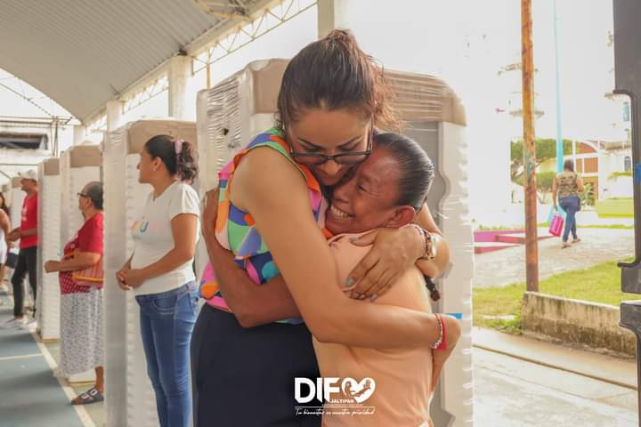
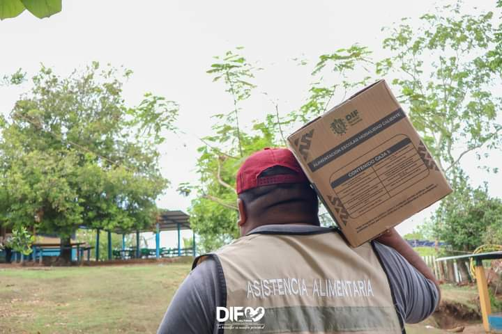
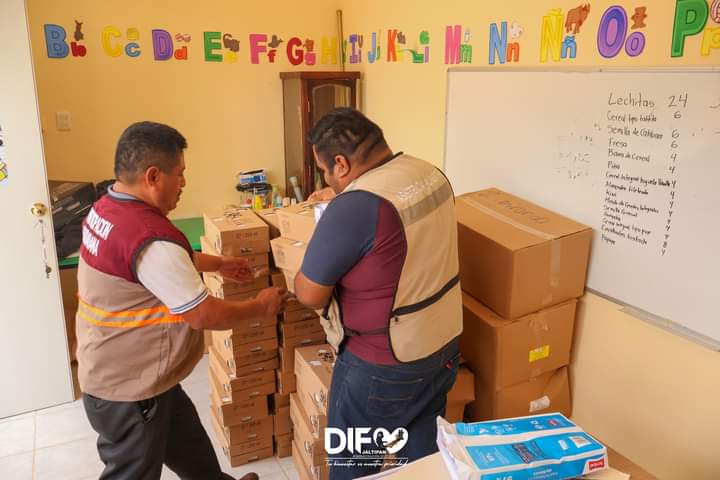
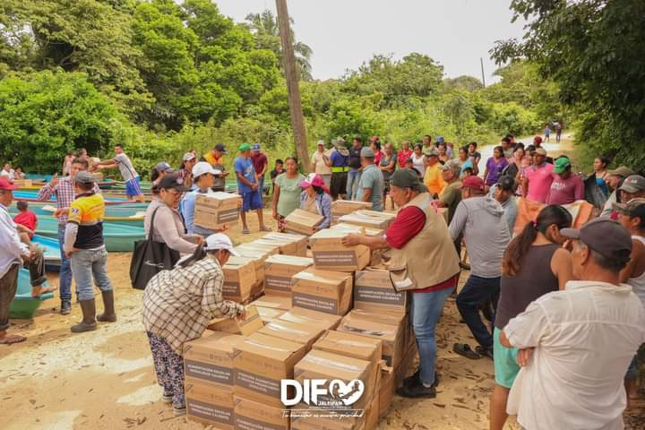
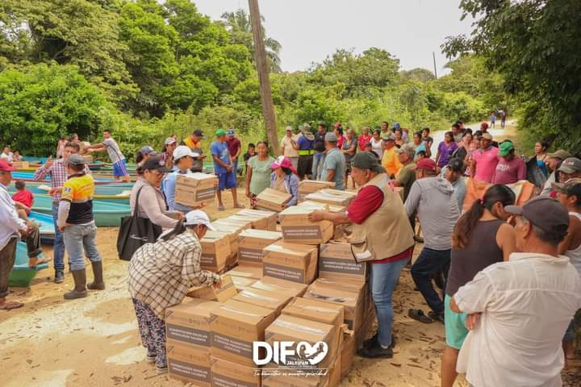
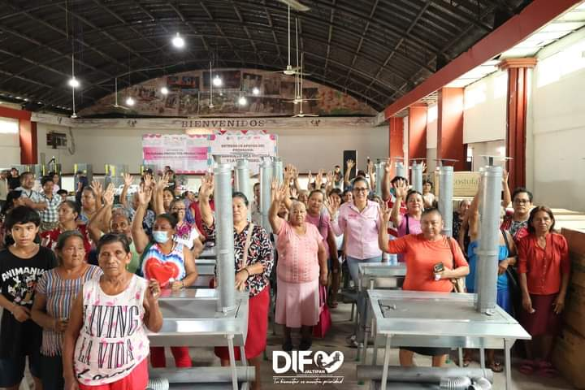
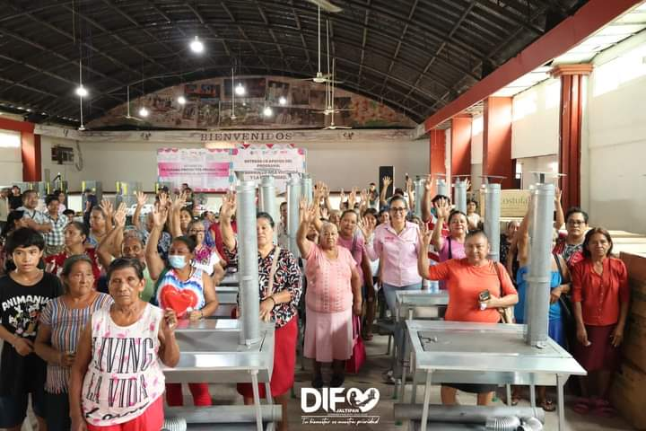
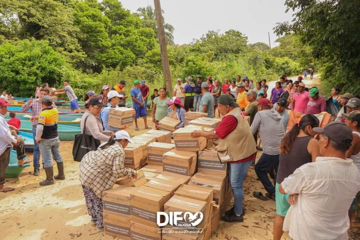
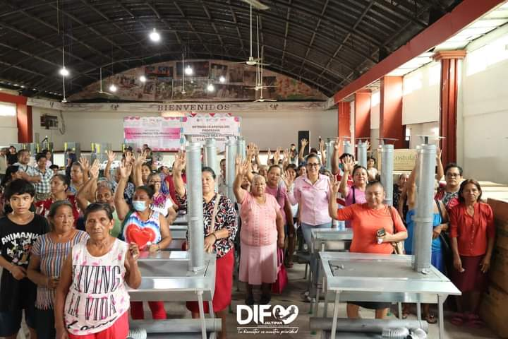

AsiteID te permite escanear tu CURP mediante un QR, almacenar y gestionar tus registros, y conocer información de localidades cercanas. Una herramienta útil para tu identificación y para las comunidades.



 

 


